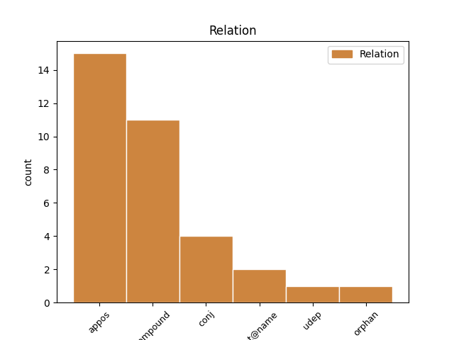
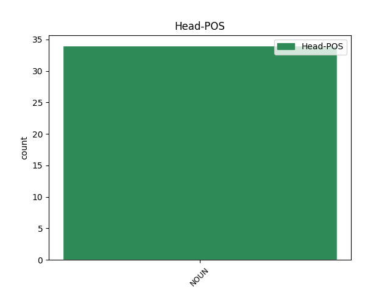
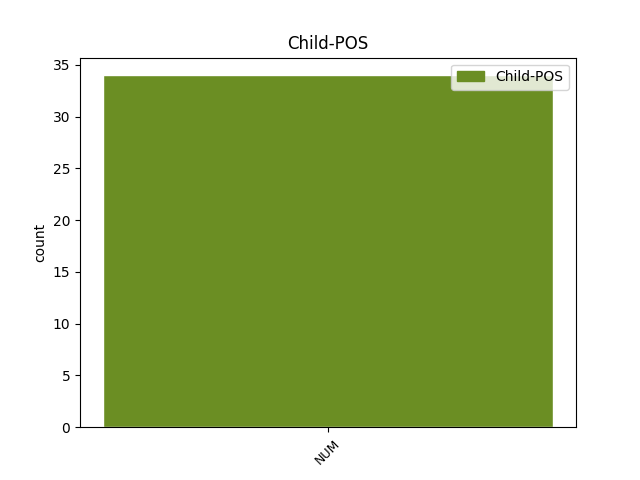

Distribution of features within this leaf



Agreement Rules sorted by frequency.
- When the dependent token is the appositional modifier(appos) of the head token, and the head token is NOUN and the dependent token is NUM.
1 Men _ _ _ _ 0 _ _ _
2 nesten _ _ _ _ 0 _ _ _
3 hver _ _ _ _ 0 _ _ _
4 kveld kveld NOUN _ Definite=Ind|Gender=Masc|Number=Sing 0 _ _ _
5 , _ _ _ _ 0 _ _ _
6 gjerne _ _ _ _ 0 _ _ _
7 klokka _ _ _ _ 0 _ _ _
8 ett én NUM _ Gender=Neut|Number=Sing|NumType=Card 4 appos _ _
9 på _ _ _ _ 0 _ _ _
10 natta _ _ _ _ 0 _ _ _
11 , _ _ _ _ 0 _ _ _
12 tar _ _ _ _ 0 _ _ _
13 Staveland _ _ _ _ 0 _ _ _
14 på _ _ _ _ 0 _ _ _
15 seg _ _ _ _ 0 _ _ _
16 topplue _ _ _ _ 0 _ _ _
17 , _ _ _ _ 0 _ _ _
18 tjukk _ _ _ _ 0 _ _ _
19 jakke _ _ _ _ 0 _ _ _
20 og _ _ _ _ 0 _ _ _
21 pledd _ _ _ _ 0 _ _ _
22 og _ _ _ _ 0 _ _ _
23 setter _ _ _ _ 0 _ _ _
24 seg _ _ _ _ 0 _ _ _
25 ut _ _ _ _ 0 _ _ _
26 på _ _ _ _ 0 _ _ _
27 terrassen _ _ _ _ 0 _ _ _
28 . _ _ _ _ 0 _ _ _
1 CNN _ _ _ _ 0 _ _ _
2 erklærer _ _ _ _ 0 _ _ _
3 nå _ _ _ _ 0 _ _ _
4 at _ _ _ _ 0 _ _ _
5 Barack _ _ _ _ 0 _ _ _
6 Obama _ _ _ _ 0 _ _ _
7 vinner _ _ _ _ 0 _ _ _
8 Californias _ _ _ _ 0 _ _ _
9 55 _ _ _ _ 0 _ _ _
10 valgmannstemmer _ _ _ _ 0 _ _ _
11 , _ _ _ _ 0 _ _ _
12 staten _ _ _ _ 0 _ _ _
13 Washingtons _ _ _ _ 0 _ _ _
14 12 _ _ _ _ 0 _ _ _
15 valgmannstemmer valgmannstemme NOUN _ Definite=Ind|Gender=Masc|Number=Plur 0 _ _ _
16 og _ _ _ _ 0 _ _ _
17 fødestaten _ _ _ _ 0 _ _ _
18 Hawaiis _ _ _ _ 0 _ _ _
19 4 4 NUM _ Number=Plur|NumType=Card 15 conj _ _
20 . _ _ _ _ 0 _ _ _
Disagree Examples:
1 På _ _ _ _ 0 _ _ _
2 50 _ _ _ _ 0 _ _ _
3 meter _ _ _ _ 0 _ _ _
4 bryst _ _ _ _ 0 _ _ _
5 fikk _ _ _ _ 0 _ _ _
6 han _ _ _ _ 0 _ _ _
7 tredjeplass _ _ _ _ 0 _ _ _
8 og _ _ _ _ 0 _ _ _
9 tiden tid NOUN _ Definite=Def|Gender=Masc|Number=Sing 0 _ _ _
10 28,28 28,28 NUM _ Number=Plur|NumType=Card 9 appos _ _
11 i _ _ _ _ 0 _ _ _
12 Mare _ _ _ _ 0 _ _ _
13 Nostrum-stevnet _ _ _ _ 0 _ _ _
14 i _ _ _ _ 0 _ _ _
15 Monte _ _ _ _ 0 _ _ _
16 Carlo _ _ _ _ 0 _ _ _
17 . _ _ _ _ 0 _ _ _
1 I _ _ _ _ 0 _ _ _
2 2. _ _ _ _ 0 _ _ _
3 omgang _ _ _ _ 0 _ _ _
4 var _ _ _ _ 0 _ _ _
5 vi _ _ _ _ 0 _ _ _
6 bedre _ _ _ _ 0 _ _ _
7 offensivt _ _ _ _ 0 _ _ _
8 , _ _ _ _ 0 _ _ _
9 kom _ _ _ _ 0 _ _ _
10 til _ _ _ _ 0 _ _ _
11 en _ _ _ _ 0 _ _ _
12 del _ _ _ _ 0 _ _ _
13 sjanser _ _ _ _ 0 _ _ _
14 og _ _ _ _ 0 _ _ _
15 burde _ _ _ _ 0 _ _ _
16 kanskje _ _ _ _ 0 _ _ _
17 hatt _ _ _ _ 0 _ _ _
18 en _ _ _ _ 0 _ _ _
19 scoring scoring NOUN _ Definite=Ind|Gender=Masc|Number=Sing 0 _ _ _
20 eller _ _ _ _ 0 _ _ _
21 to to NUM _ Number=Plur|NumType=Card 19 conj _ _
22 . _ _ _ _ 0 _ _ _
1 Bare _ _ _ _ 0 _ _ _
2 en _ _ _ _ 0 _ _ _
3 storseier storseier NOUN _ Definite=Ind|Gender=Masc|Number=Sing 0 _ _ _
4 til _ _ _ _ 0 _ _ _
5 HSV _ _ _ _ 0 _ _ _
6 over _ _ _ _ 0 _ _ _
7 Slavia _ _ _ _ 0 _ _ _
8 Praha _ _ _ _ 0 _ _ _
9 , _ _ _ _ 0 _ _ _
10 minst _ _ _ _ 0 _ _ _
11 4 4 NUM _ Number=Plur|NumType=Card 3 conj _ _
12 - _ _ _ _ 0 _ _ _
13 0 _ _ _ _ 0 _ _ _
14 , _ _ _ _ 0 _ _ _
15 og _ _ _ _ 0 _ _ _
16 Sofia-tap _ _ _ _ 0 _ _ _
17 for _ _ _ _ 0 _ _ _
18 Monaco _ _ _ _ 0 _ _ _
19 gir _ _ _ _ 0 _ _ _
20 Viking _ _ _ _ 0 _ _ _
21 tredjeplass _ _ _ _ 0 _ _ _
22 i _ _ _ _ 0 _ _ _
23 puljen _ _ _ _ 0 _ _ _
24 . _ _ _ _ 0 _ _ _
1 Lagene _ _ _ _ 0 _ _ _
2 gikk _ _ _ _ 0 _ _ _
3 til _ _ _ _ 0 _ _ _
4 pause _ _ _ _ 0 _ _ _
5 til _ _ _ _ 0 _ _ _
6 tilnærmet _ _ _ _ 0 _ _ _
7 håndgemeng _ _ _ _ 0 _ _ _
8 i _ _ _ _ 0 _ _ _
9 spillertunellen _ _ _ _ 0 _ _ _
10 på _ _ _ _ 0 _ _ _
11 stillingen stilling NOUN _ Definite=Def|Gender=Masc|Number=Sing 0 _ _ _
12 1 1 NUM _ Number=Plur|NumType=Card 11 appos _ _
13 - _ _ _ _ 0 _ _ _
14 0 _ _ _ _ 0 _ _ _
15 til _ _ _ _ 0 _ _ _
16 Aalesund _ _ _ _ 0 _ _ _
17 . _ _ _ _ 0 _ _ _
1 Solveig _ _ _ _ 0 _ _ _
2 Brandal _ _ _ _ 0 _ _ _
3 påpeker _ _ _ _ 0 _ _ _
4 i _ _ _ _ 0 _ _ _
5 Syn _ _ _ _ 0 _ _ _
6 og _ _ _ _ 0 _ _ _
7 Segn _ _ _ _ 0 _ _ _
8 3/08 _ _ _ _ 0 _ _ _
9 at _ _ _ _ 0 _ _ _
10 der _ _ _ _ 0 _ _ _
11 Armand _ _ _ _ 0 _ _ _
12 tier _ _ _ _ 0 _ _ _
13 , _ _ _ _ 0 _ _ _
14 taler _ _ _ _ 0 _ _ _
15 Solstad _ _ _ _ 0 _ _ _
16 uredd _ _ _ _ 0 _ _ _
17 med _ _ _ _ 0 _ _ _
18 to _ _ _ _ 0 _ _ _
19 brennende _ _ _ _ 0 _ _ _
20 aktuelle _ _ _ _ 0 _ _ _
21 essay essay NOUN _ Definite=Ind|Gender=Neut|Number=Plur 0 _ _ _
22 , _ _ _ _ 0 _ _ _
23 det _ _ _ _ 0 _ _ _
24 ene ene NUM _ Definite=Def|Number=Sing|NumType=Card 21 appos _ _
25 om _ _ _ _ 0 _ _ _
26 Ibsens _ _ _ _ 0 _ _ _
27 Brand _ _ _ _ 0 _ _ _
28 der _ _ _ _ 0 _ _ _
29 han _ _ _ _ 0 _ _ _
30 kritiserer _ _ _ _ 0 _ _ _
31 samtiden _ _ _ _ 0 _ _ _
32 for _ _ _ _ 0 _ _ _
33 ensidig _ _ _ _ 0 _ _ _
34 sekularisering _ _ _ _ 0 _ _ _
35 / _ _ _ _ 0 _ _ _
36 verdsliggjøring _ _ _ _ 0 _ _ _
37 , _ _ _ _ 0 _ _ _
38 det _ _ _ _ 0 _ _ _
39 andre _ _ _ _ 0 _ _ _
40 om _ _ _ _ 0 _ _ _
41 at _ _ _ _ 0 _ _ _
42 ytringsfriheten _ _ _ _ 0 _ _ _
43 bør _ _ _ _ 0 _ _ _
44 ha _ _ _ _ 0 _ _ _
45 grenser _ _ _ _ 0 _ _ _
46 . _ _ _ _ 0 _ _ _